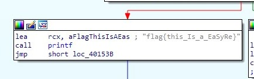

逆逆逆逆逆向-CTF之reverse
既然把cs50的c语言翻了个底 我们来学习反编译 然后引导到CTF的reverse大类
关键基本都在ida pro的使用
以及反编程后的信息搜集
1 | ~目前来说有用的记录~ |
测试题 BUUCTF-easyre1
将题目提供的exe以ida pro打开
ida pro会自动判断我们提供软件的类型并提供选择 这里直接点击ok
软件内有很多不同的视窗 我们来主要分析他生成的视窗化代码

很明显这段就是flag 输入后便能完成题目
目前先更到这里 后面主要讲解ida pro 的各项功能和视窗的不同 然后再来两个例题
至于ida相关的介绍
主页面

函数窗口
可以使用ctrl+f搜索指定名称的函数
数据窗口
分为 视图 和 文字 两种显示方式 可以按空格来切换 文字视窗展示了一些汇编代码和地址
伪代码模式（F5）
在汇编窗口文本模式中对着函数点F5即可弹出伪代码窗口。其是将汇编语言变成伪代码，方便阅读。
十六进制窗口
默认情况下，十六进制窗口显示程序内容和列表的标准十六进制代码，每行显示16个字节，以及其对应的ASCII字符。和在反汇编窗口中一样，用户也可以同时打开几个十六进制窗口
消息窗口
显示IDA输出的信息，用户可以通过输出信息找到文件分析有关的状态信息和操作导致的错误信息，这个窗口类似于Pycharm等软件的Console控制台。
导航栏：
彩色的水平带是 IDA 的概况导航栏，也叫做导航带。导航带是被加载文件地址空间的线性视图。默认情况下，它会呈现二进制文件的整个地址范围。你可以右击导航带内任何位置。在导航带上，会有一个细小的当前位置指示符（默认为黄色）指向与当前反汇编窗口中显示的地址范围对应的导航带地址。将光标悬停在导航带的任何位置，IDA 会显示一个提示，指出其在二进制文件中的对应位置。
简单来说，点到哪里跳到哪里，而不同的颜色代表了不同的数据段，比如说data段，text段等
参考:https://blog.csdn.net/qq_52642385/article/details/135620222